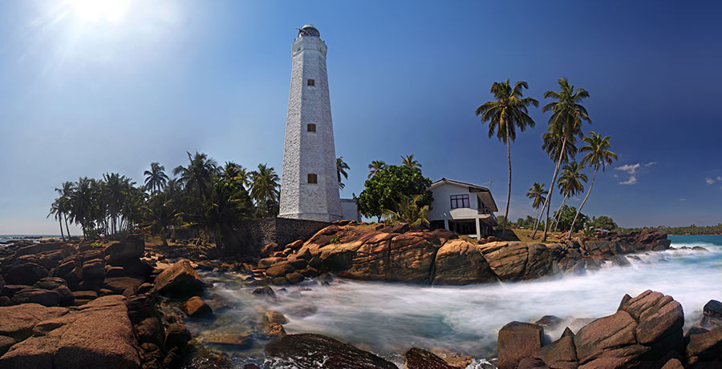

About Lighthouse

Dondra Head Lighthouse is a lighthouse located on Dondra Head, Dondra, the southernmost
point in Sri Lanka and is Sri Lanka's tallest lighthouse,[1] and also one of the
tallest in South East Asia. Dondra Head lighthouse is operated and maintained by the
Sri Lanka Ports Authority.
Dondra Head Lighthouse was designed by Sir James Nicholas Douglass, with construction,
by William Douglass of the Imperial Lighthouse Service, commencing in November 1887.All
the building materials including the bricks and steel were imported from England.
The lighthouse is 49 m high and contains 7 floors, 14 two panel yellow colour windows
and 196 steps to the top. Dondra Head is also one of four international lighthouse in
Sri Lanka.